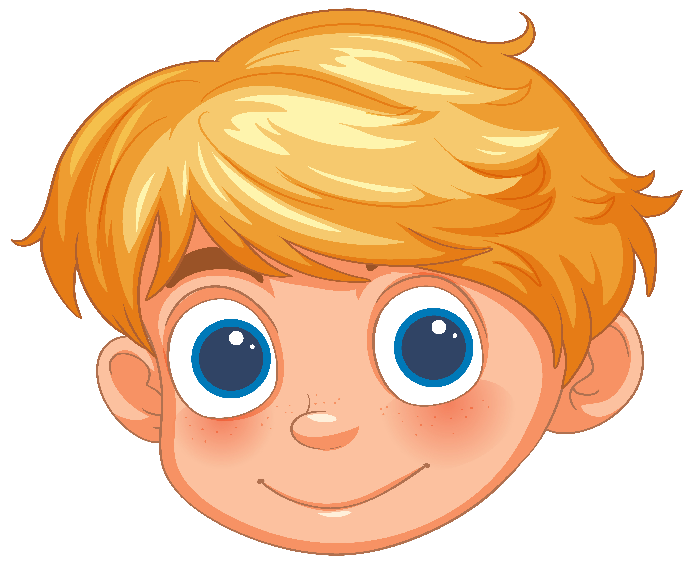
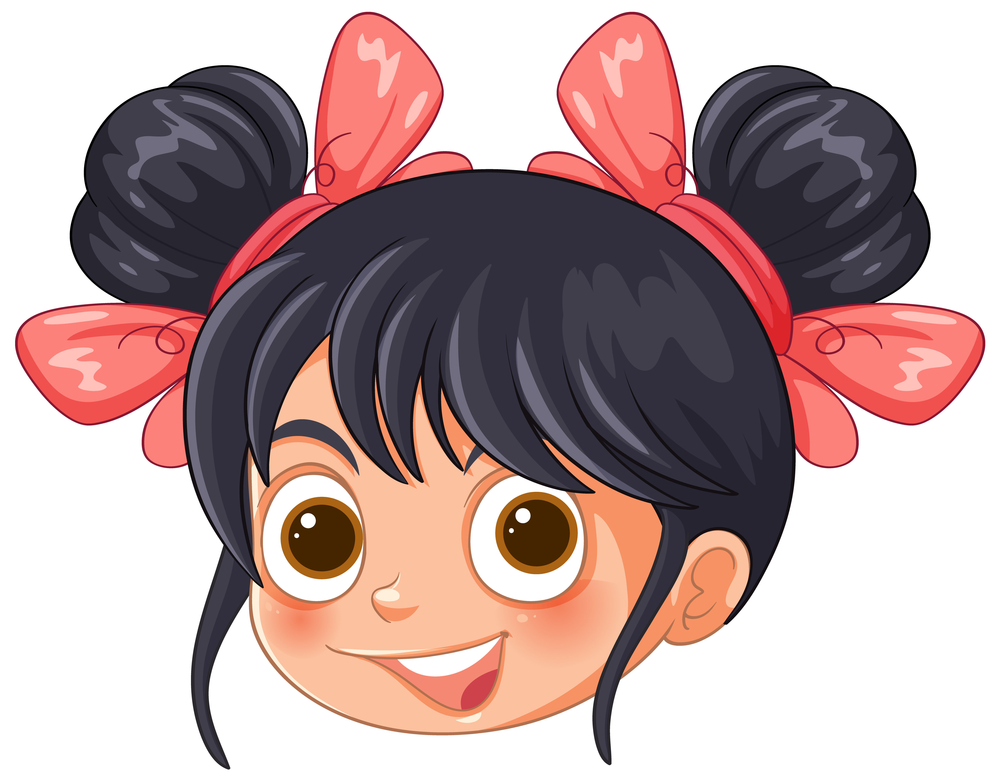

Marek, 7
"Meine Beine tuen weh!"

Paula, 3
"Ich habe ein Stein gefunden!"
Milan, 5
"Mein Stock ist eine Pistole!"
Dieter, 9
"Wann gibt´s das Eis?"
Mandy, 7
"Warum ist kein Klo hier?"
Matteo, 10
"Am schwersten war das Feuermachen ohne Streichholz, ich hab´gedacht das klappt nie."
Marie, 7
"Bäume und Menschen passen gut zusammen. Bäume finden sogar die alte Luft gut, die wir ausatmen."
Marco, 11
"Ich bin gern draußen. Da muss man nichts müssen."
Simon, 7
"Mein Papa weiß sicher nicht, dass Regenwürmer erst Babies kriegen, wenn sie einen Gürtel haben."
Ferko, 8
"Mir hat das Edelsteinsuchen gut gefallen, weil die glitzrig sind."
Adriana, 6
"Mir hat der Wald gefallen, weil dort Bäume sind."